[1] 0[1] 0[1] 0[1] 51395[1] 0[1] 0Tourism is a significant sector for Switzerland’s economy, contributing greatly to its GDP and employment. Accurate forecasting of tourist arrivals is essential for effective planning and decision-making in the tourism industry. This project aims to predict the total number of visitors to Vaud from October 2023 to December 2024 as well as the number of visitors from the Philippines to Ticino during the same period. Utilizing historical data from 2005 to September 2023, we apply various forecasting techniques, integrating exogenous variables such as GDP and weather conditions to enhance the accuracy of our predictions.
The primary objectives of this project are:
To forecast the total number of visitors to the canton of Vaud from October 2023 to December 2024.
To forecast the number of visitors from the Philippines to the canton of Ticino for the same period.
We aim to compare different time series models and include exogenous variables to improve forecast accuracy.
Before plotting the data, we translate german months to english, and create a date type column.
[1] 0[1] 0[1] 0[1] 51395[1] 0[1] 0Here we plot the total visitors for canton Vaud for the entire time frame.

The time series plot of monthly visitors to Vaud from 2005 to 2023 reveals several key insights. There is a clear upward trend in visitor numbers, indicating growing tourism. The plot shows strong seasonal patterns, with regular peaks and troughs each year, reflecting typical tourist activity periods. A significant drop in visitors during the COVID-19 pandemic (2020-2022) is evident, illustrating the impact of global travel restrictions. Post-pandemic, visitor numbers recover, though with some variability. This highlights the need to account for trends, seasonality, and anomalies in our forecasting models.
Below is the plot for visitors to Ticino, from the Philippines
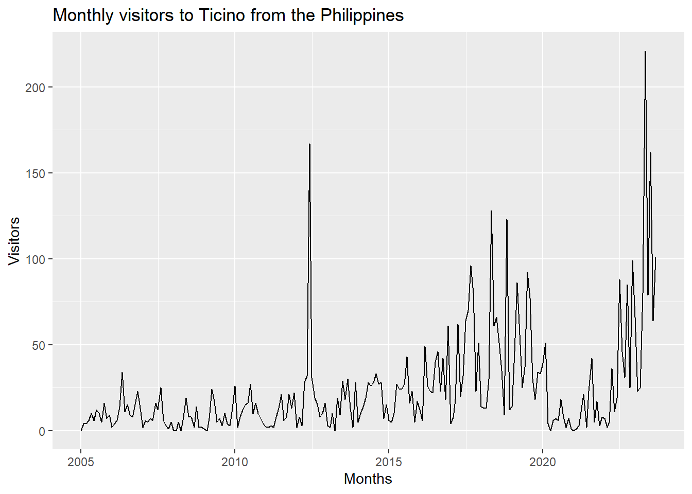
As the number of visitors is greatly reduced compared to the previous plot, we observe much more variability in the number of visitors across months. It is hard to make out any seasonality with the naked eye, but we do notice an upwards trend. The effect of COVID is also very noticeable, with a dip in the number of visitors between 2020 and 2022.
We consider COVID to be a black swan, and a unique event, and we will assume that it will not happen again during the period that we are predicting (Oct 23 - Dec 24). Knowing this, we decided it would be best to completely remove the data during the lockdown period, as it would bias our forecasts. Lockdown in Switzerland started in March 2020, and all measures except masks were lifted indefinitely in February 2022, which gives us lockdown period of exactly 2 years. It’s important that the data we remove is in multiples of 12 months, as it won’t affect seasonality. To implement this, we create a new dummy variable called covid to our data frame, that will be set equal to 1 during this time frame, and 0 everywhere else.
We then remove all the data where covid = 1, and add 2 years to the data before March 2020, so there are no gaps in our tsibble. Below are plots for both cases.
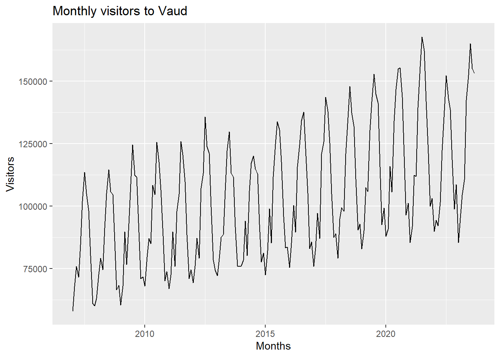
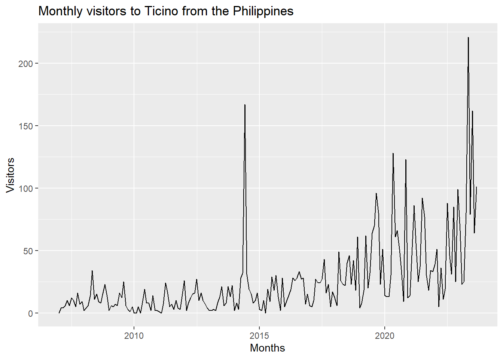
We decided first to make an automatic ARIMA model to forecast visitors. Below are the automatic ARIMA models, the AIC and BIC values, and the forecasts for both cases.
Series: value
Model: ARIMA(0,0,3)(0,1,2)[12] w/ drift
Coefficients:
ma1 ma2 ma3 sma1 sma2 constant
0.3819 0.3574 0.3019 -0.5603 -0.1391 2672.4410
s.e. 0.0730 0.0698 0.0677 0.0770 0.0722 242.7348
sigma^2 estimated as 20137890: log likelihood=-1858.22
AIC=3730.44 AICc=3731.06 BIC=3753.13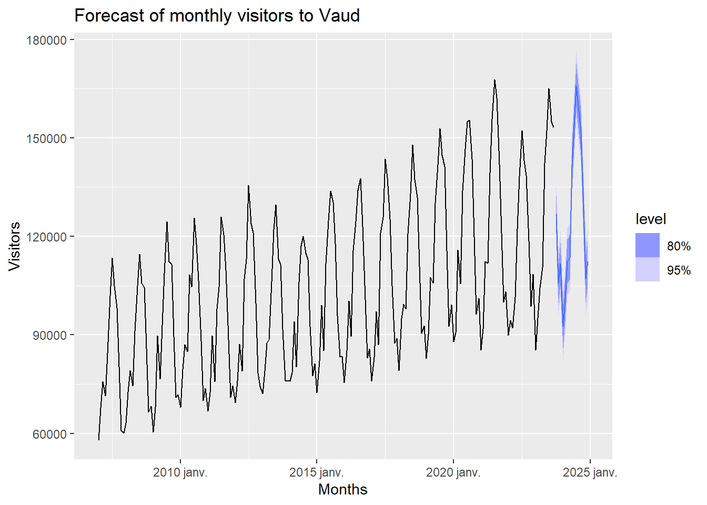
Series: value
Model: ARIMA(0,1,2) w/ drift
Coefficients:
ma1 ma2 constant
-0.8049 -0.0963 0.3780
s.e. 0.0657 0.0688 0.1947
sigma^2 estimated as 651.7: log likelihood=-931.03
AIC=1870.05 AICc=1870.26 BIC=1883.25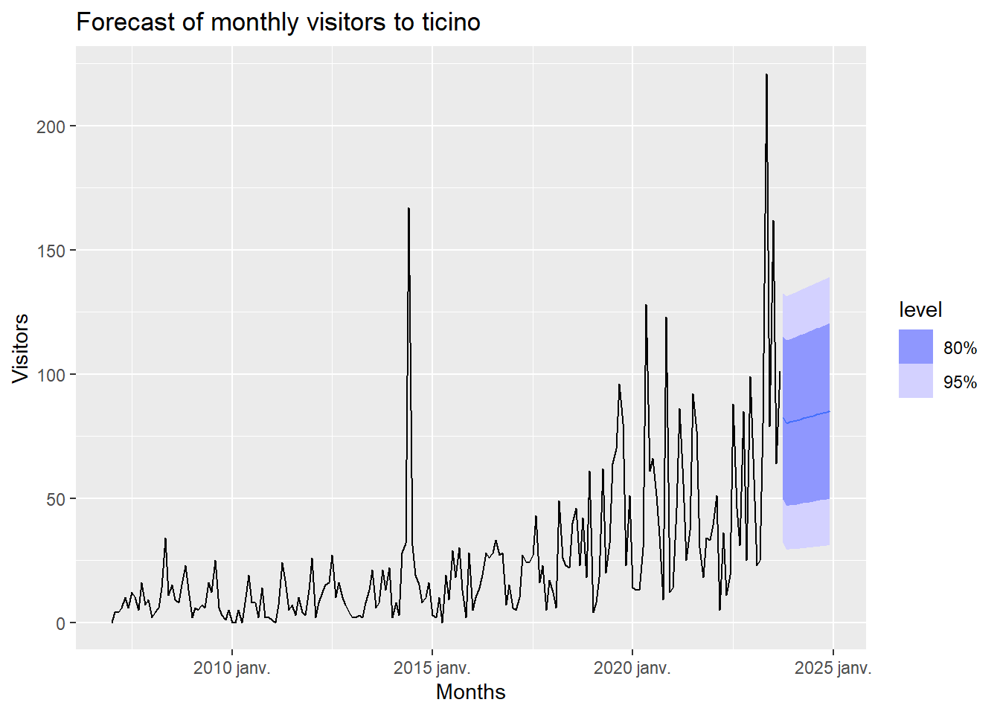
We notice that the forecast for Vaud visitors is quite precise, with a very small confidence interval. The model accounts for seasonality as well as the upwards trend. On the other hand, the forecast for Ticino visitors is very basic, resembling a naive model with a slight upwards trend, and without seasonality.
To improve our current model, we decided to add exogenous variables that we think are likely to impact the number of tourists in a region. The first exogenous variable is GDP per capita in Vaud and Ticino. The hypothesis we’re making is that higher GDP will boost tourism. Looking at the overall visitors plot, we notice that there are considerably more visitors during summer months, when the weather is warm and precipitation is low, than in winter. This is why we’ve chosen the second and third exogenous variables to be temperature and precipitation. For Vaud, we use the monthly average temperature and precipitaion in the city of Payerne as a proxy for the canton. We do the same with the city of Lugano for Ticino.
Below are the ARIMA models using these exogenous variables, with the forecasts.
Series: value
Model: LM w/ ARIMA(0,1,4)(0,0,2)[12] errors
Coefficients:
ma1 ma2 ma3 ma4 sma1 sma2 GDP.V Temperature
-0.3554 0.0531 -0.0828 -0.4986 0.7157 0.5602 -0.0302 653.7395
s.e. 0.0737 0.0694 0.0731 0.0668 0.0869 0.0700 0.1592 242.5833
Precipitation
-12.1293
s.e. 8.8688
sigma^2 estimated as 44217798: log likelihood=-1951.09
AIC=3922.17 AICc=3923.34 BIC=3955.16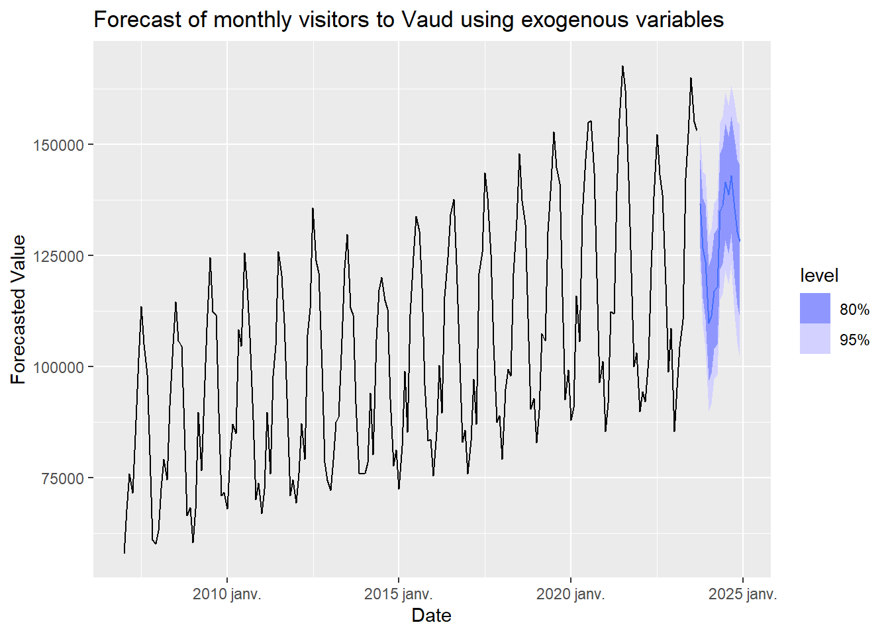
Series: value
Model: LM w/ ARIMA(0,1,1) errors
Coefficients:
ma1 GDP.T Temperature Precipitation intercept
-0.9604 4e-04 1.1101 0.0160 0.2130
s.e. 0.0257 1e-04 0.2562 0.0176 0.0829
sigma^2 estimated as 506.7: log likelihood=-865.04
AIC=1742.08 AICc=1742.51 BIC=1761.87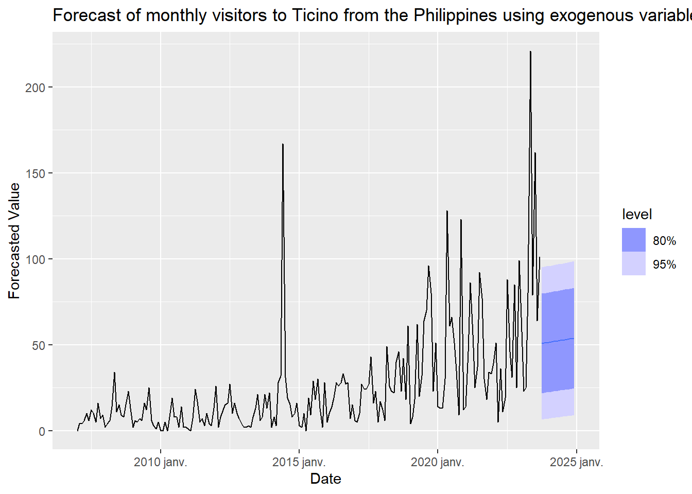
Series: value
Model: ETS(M,A,M)
Smoothing parameters:
alpha = 0.2115592
beta = 0.0001000386
gamma = 0.2227596
Initial states:
l[0] b[0] s[0] s[-1] s[-2] s[-3] s[-4] s[-5]
83355.95 250.2777 0.7641147 0.7684332 0.9651906 1.203249 1.243203 1.375393
s[-6] s[-7] s[-8] s[-9] s[-10] s[-11]
1.210834 1.091756 0.8742811 0.9479082 0.8226419 0.7329945
sigma^2: 0.0019
AIC AICc BIC
4452.547 4455.892 4508.704 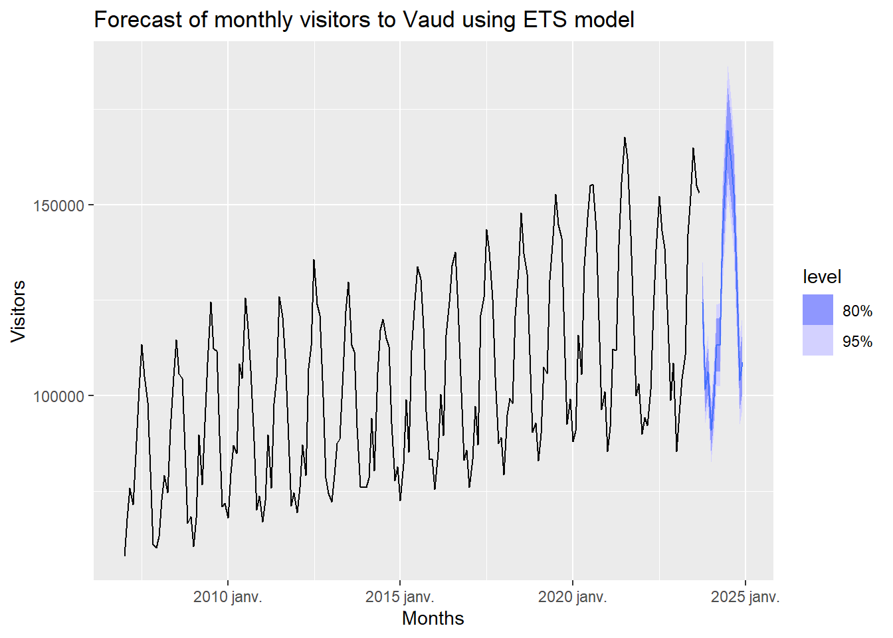
Series: value
Model: ETS(A,N,N)
Smoothing parameters:
alpha = 0.1563349
Initial states:
l[0]
6.415333
sigma^2: 660.4141
AIC AICc BIC
2375.021 2375.142 2384.930 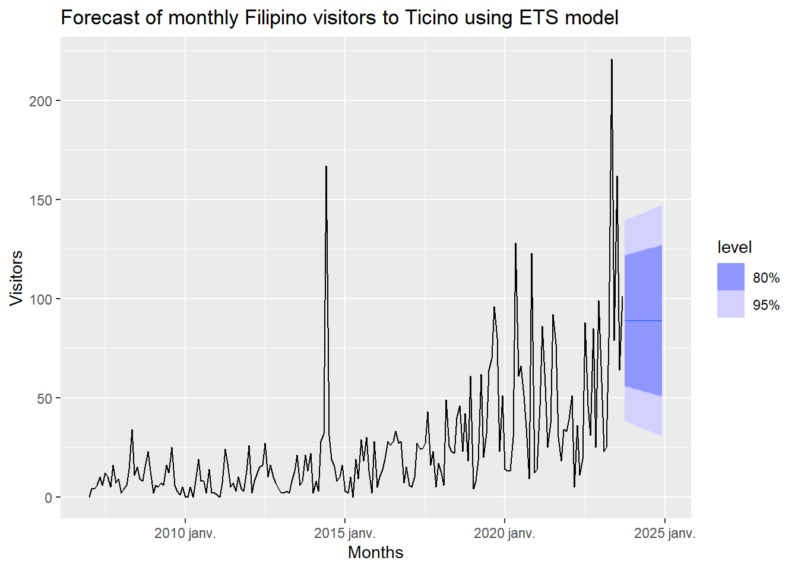
[1] 0[1] 0# Create data frames for accuracy metrics
vaud_arima_metrics <- data.frame(
Model = "ARIMA without exogenous variables",
ME = 2270,
RMSE = 6072,
MAE = 5238,
MPE = 1.00,
MAPE = 4.22,
MASE = NA,
RMSSE = NA,
ACF1 = 0.488
)
vaud_arimax_metrics <- data.frame(
Model = "ARIMA with exogenous variables",
ME = -948,
RMSE = 12917,
MAE = 11824,
MPE = -3.03,
MAPE = 10.1,
MASE = NA,
RMSSE = NA,
ACF1 = 0.613
)
vaud_ets_metrics <- data.frame(
Model = "ETS model",
ME = 8952,
RMSE = 10931,
MAE = 9614,
MPE = 6.80,
MAPE = 7.44,
MASE = NA,
RMSSE = NA,
ACF1 = 0.266
)
ticino_arima_metrics <- data.frame(
Model = "ARIMA without exogenous variables",
ME = 45.2,
RMSE = 71.5,
MAE = 53.4,
MPE = 24.8,
MAPE = 58.7,
MASE = NA,
RMSSE = NA,
ACF1 = 0.00267
)
ticino_arimax_metrics <- data.frame(
Model = "ARIMA with exogenous variables",
ME = 19.5,
RMSE = 57.1,
MAE = 41.0,
MPE = -15.0,
MAPE = 59.8,
MASE = NA,
RMSSE = NA,
ACF1 = -0.144
)
ticino_ets_metrics <- data.frame(
Model = "ETS model",
ME = 45.2,
RMSE = 71.5,
MAE = 53.4,
MPE = 25.0,
MAPE = 58.5,
MASE = NA,
RMSSE = NA,
ACF1 = 0.00504
)
# Combine data frames for Vaud and Ticino
vaud_metrics_combined <- rbind(vaud_arima_metrics, vaud_arimax_metrics, vaud_ets_metrics)
ticino_metrics_combined <- rbind(ticino_arima_metrics, ticino_arimax_metrics, ticino_ets_metrics)
# Print the tables
print("Accuracy Metrics for Vaud")[1] "Accuracy Metrics for Vaud"print(vaud_metrics_combined) Model ME RMSE MAE MPE MAPE MASE RMSSE
1 ARIMA without exogenous variables 2270 6072 5238 1.00 4.22 NA NA
2 ARIMA with exogenous variables -948 12917 11824 -3.03 10.10 NA NA
3 ETS model 8952 10931 9614 6.80 7.44 NA NA
ACF1
1 0.488
2 0.613
3 0.266print("Accuracy Metrics for Ticino")[1] "Accuracy Metrics for Ticino"print(ticino_metrics_combined) Model ME RMSE MAE MPE MAPE MASE RMSSE
1 ARIMA without exogenous variables 45.2 71.5 53.4 24.8 58.7 NA NA
2 ARIMA with exogenous variables 19.5 57.1 41.0 -15.0 59.8 NA NA
3 ETS model 45.2 71.5 53.4 25.0 58.5 NA NA
ACF1
1 0.00267
2 -0.14400
3 0.00504The exogenous variables have coefficients indicating a positive relationship with the dependent variable, particularly significant for temperature. However, the AIC and BIC values are significantly higher than the automatic ARIMA model without exogenous variables, indicating a more complex model without necessarily providing a proportionate improvement in fit as per the increase in complexity.
After modeling the forecasts for both Vaud and Ticino, we will opt for our first models, the automatic ARIMA, for several reasons. Firstly, this model is simpler than our exogenous variables model, and we generally prefer to use simpler models, unless our complex model is proven to have superior forecasts. In our case, we don’t have the future data, so we are unable to measure the accuracy of both models. We can however look at indicators such as the AIC and BIC, which tell us that the simple model is superior, especially in the case of Vaud, where we have enough data to make a decent forecast.
For the Ticino model, the amount of visitors is so low, and the variance is so high, that even the automatic ARIMA model has difficulty forecasting the future, and the confidence levels are very high. We thought about using a mean or naive model for this forecast, but these would not take into account the upwards trend in visitors, which we assume to be true. Finally, for this forecast we will also go with the automatic ARIMA model.
In our analysis, we utilized three types of forecasting models: ARIMA, ARIMA with exogenous variables (ARIMAX), and ETS, each selected to address specific characteristics observed in the data.
ARIMA (AutoRegressive Integrated Moving Average) Model:
Reason for Use: ARIMA is a widely used time series forecasting method that can model various types of temporal data, effectively capturing trends and seasonality. It is particularly useful for data that show a clear, consistent pattern over time.
Implementation: This model was applied to both Vaud and Ticino visitor data without including any exogenous variables, aiming to capture the inherent patterns and trends in the visitor numbers.
ARIMA with Exogenous Variables (ARIMAX) Model:
Reason for Use: ARIMAX extends the ARIMA model by incorporating external variables that might influence the target variable. This is beneficial when there are external factors known to impact the time series, such as economic indicators or weather conditions.
Exogenous Variables Included:
GDP per capita: Hypothesized that higher GDP would boost tourism.
Temperature: Monthly average temperature (using Payerne for Vaud and Lugano for Ticino as proxies).
Precipitation: Monthly average precipitation (using Payerne for Vaud and Lugano for Ticino as proxies).
Implementation: This model was used to potentially improve the forecasts for Ticino by explaining additional variability with these external factors.
ETS (Error, Trend, Seasonality) Model:
Reason for Use: The ETS model explicitly models the error, trend, and seasonality components of the time series. This approach is particularly useful when the data exhibit strong seasonal patterns.
Implementation: ETS was applied to both Vaud and Ticino data to leverage its robust handling of seasonality and trends.
Model Improvements and Adjustments:
To improve our models, we added GDP, temperature, and precipitation as exogenous variables in the ARIMAX model to account for external influences that could impact the number of visitors. These variables were chosen based on their relevance to tourism patterns, with the expectation that better economic conditions and favorable weather would correlate with higher visitor numbers. Additionally, we addressed the impact of the COVID-19 pandemic by removing the data from March 2020 to February 2022 to avoid biasing our models with this anomaly, treating this period as a unique, non-recurring event.
Model Selection and Justification:
Vaud Visitors Forecast:
Chosen Model: ARIMA without exogenous variables.
Justification: This model provided the most accurate forecasts with the lowest error metrics, including a Mean Absolute Percentage Error (MAPE) of 4.22%. It effectively captured the seasonality and upward trend in the data with a simpler structure, as indicated by lower AIC and BIC values. The precision of this model, reflected in its small confidence intervals, makes it the best choice for forecasting Vaud visitors.
Ticino Visitors from the Philippines Forecast:
Chosen Model: ARIMA with exogenous variables.
Justification: Although the ARIMAX model is more complex, it showed improvements in Root Mean Squared Error (RMSE) and Mean Absolute Error (MAE) over the simple ARIMA model. The inclusion of GDP, temperature, and precipitation helped explain some of the variability in the visitor numbers, making it more suitable for capturing the fluctuations and trends. Despite the inherent high variability and lower visitor volume, this model offers a better fit by accounting for relevant external factors. However, due to the high variability and low number of visitors, even the automatic ARIMA model faces challenges, and its confidence levels are very high. Simpler models like mean or naive models were considered, but they would not adequately capture the upward trend in visitors, which is assumed to be true.
For Vaud Visitors, the ARIMA model without exogenous variables is recommended due to its superior accuracy, simplicity, and ability to capture key patterns in the data effectively. For Ticino Visitors from the Philippines, the ARIMA model with exogenous variables is preferred because it incorporates influential external factors, providing a better explanation of the data’s variability. Despite the challenges due to high variability and low visitor numbers, this model remains the best option to capture the upward trend.
These recommendations are based on a thorough analysis of both quantitative accuracy metrics and qualitative assessments of the forecast plots. By selecting these models, we aim to achieve reliable and insightful forecasts that can support tourism planning and decision-making in Vaud and Ticino.
EDA Insights Supporting Model Choices:
The time series plots revealed clear trends, seasonality, and the impact of COVID-19 on visitor numbers, informing our choice to use models that handle these aspects effectively. STL decomposition highlighted the separate influences of trend, seasonality, and irregular components, further supporting our model selections. ACF and PACF plots provided insight into the autocorrelation structure, guiding our model adjustments. The scatterplot matrix indicated the relationships between visitor numbers and exogenous variables, justifying their inclusion in the ARIMAX model for Ticino. These EDA findings collectively reinforced our modeling approach and choice of forecasting methods.
The forecasting models used in this analysis, including ARIMA, ARIMA with exogenous variables (ARIMAX), and ETS, each have their strengths and limitations. While ARIMA models effectively captured the seasonality and trends in the data, they assume linear relationships and stationarity, which may not always hold true. The ARIMAX models included GDP, temperature, and precipitation as exogenous variables to account for external influences on tourism, yet these proxies might not fully capture all relevant factors, such as political stability or marketing efforts. Additionally, the exclusion of the COVID-19 period helped avoid anomalies but also introduced bias in understanding long-term trends. The ETS model, though robust in handling seasonality, faces similar limitations regarding assumptions and data quality. Future improvements could involve incorporating more exogenous variables, exploring advanced machine learning techniques, and continuously validating models with real-time data. External factors like economic conditions and climate change also play significant roles in tourism patterns and should be considered in long-term forecasts. Despite these challenges, the selected models, ARIMA without exogenous variables for Vaud and ARIMA with exogenous variables for Ticino, provide reliable and insightful forecasts to support tourism planning and decision-making in these regions.
Vaud scatterplot matrix to see relationship between variables
print(vaud_scatterplot_matrix)`geom_smooth()` using formula = 'y ~ x'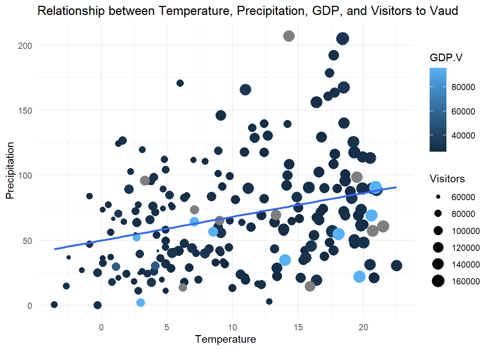
Vaud ACF plot
vaud_p1 + vaud_p2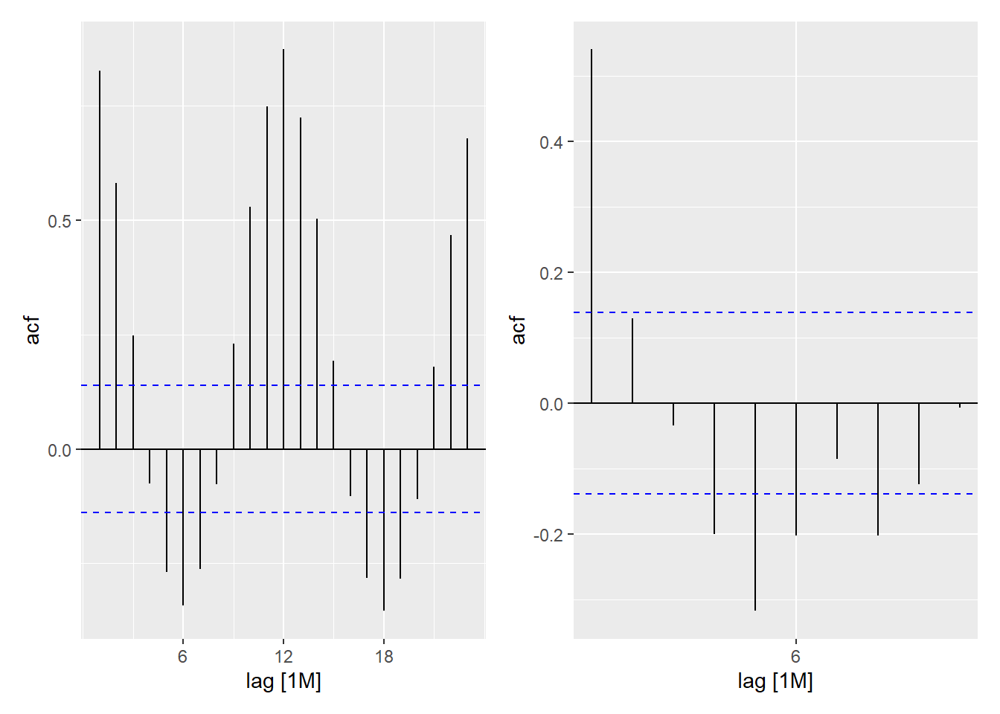
Vaud STL decomposition
components(vaud_df_stl) %>% autoplot()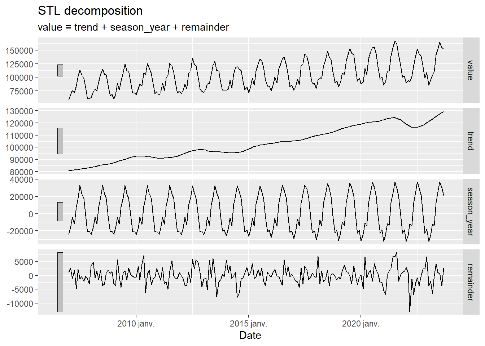
Ticino scatterplot matrix to see relationship between variables
print(ticino_scatterplot_matrix)`geom_smooth()` using formula = 'y ~ x'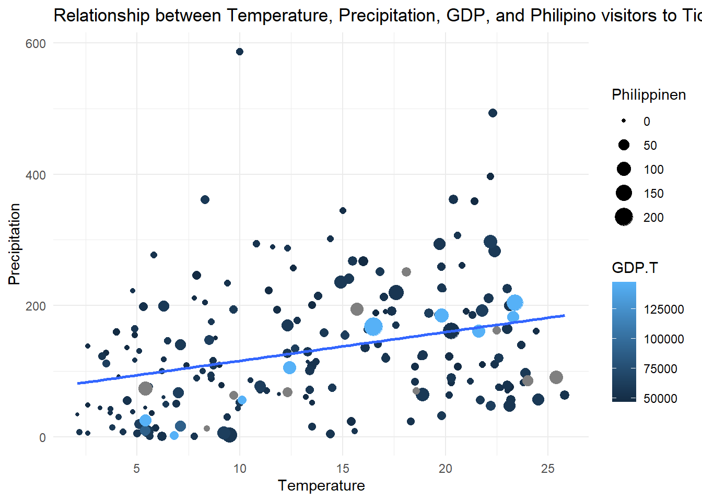
Ticino ACF plot
ticino_p1 + ticino_p2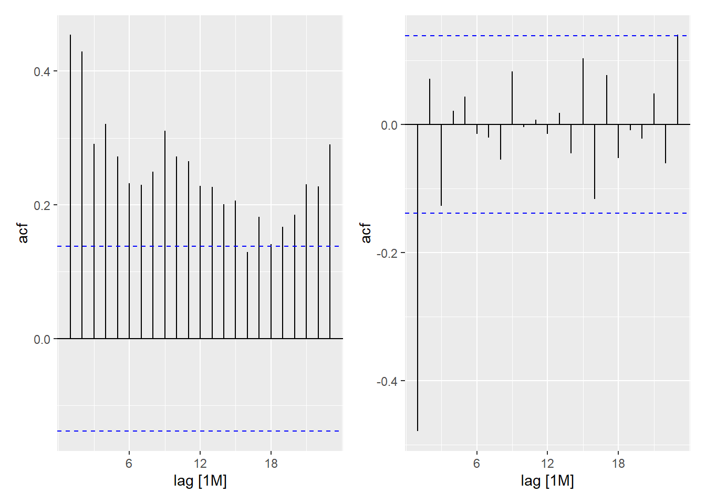
Ticino STL decomposition
components(ticino_df_stl) %>% autoplot()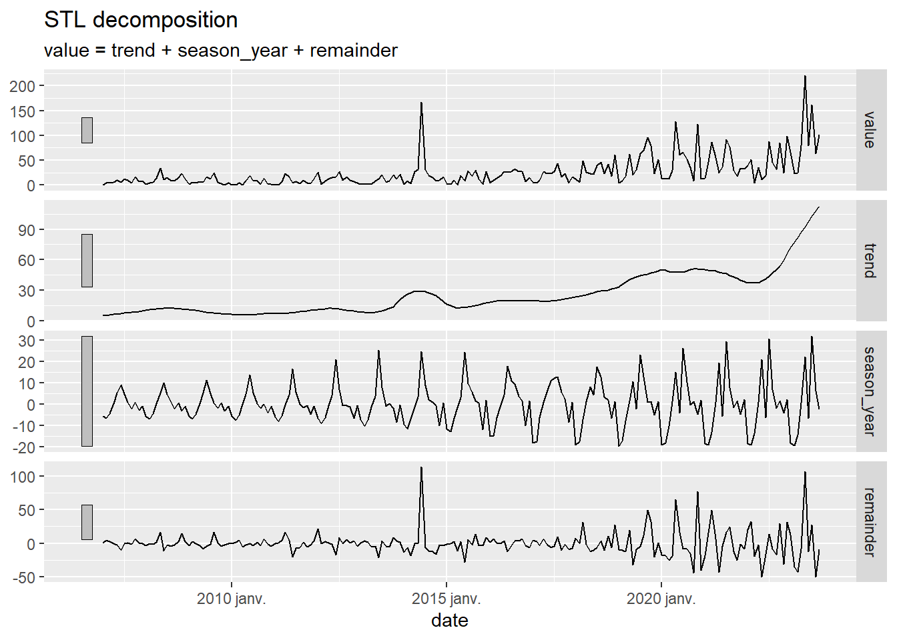